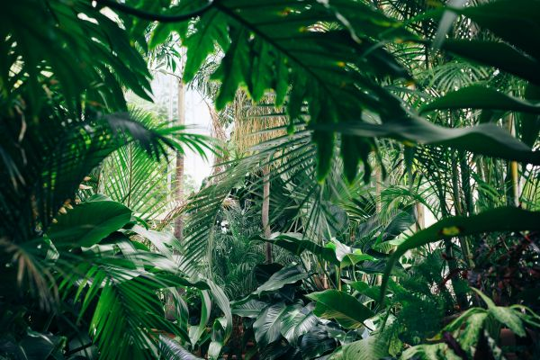
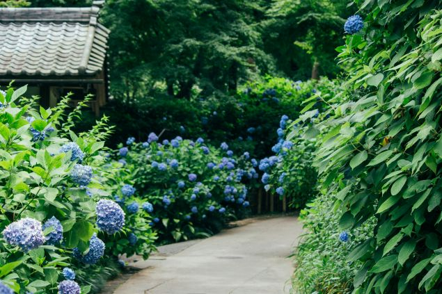
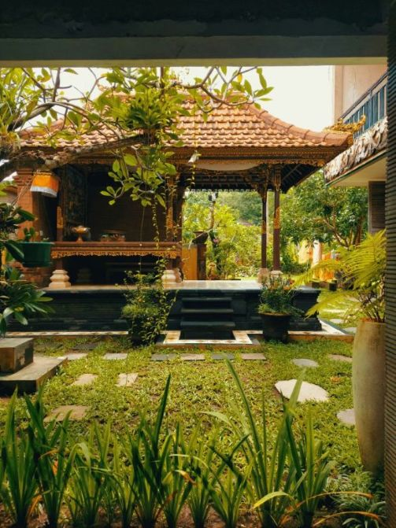
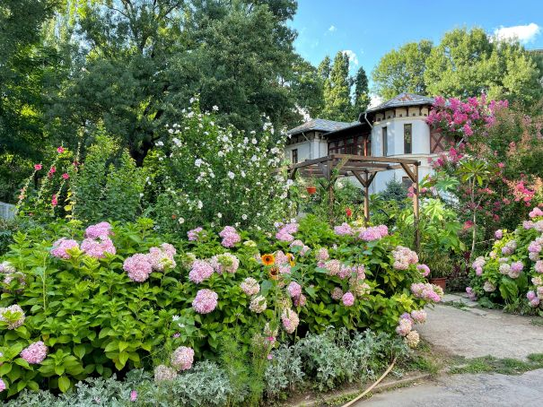
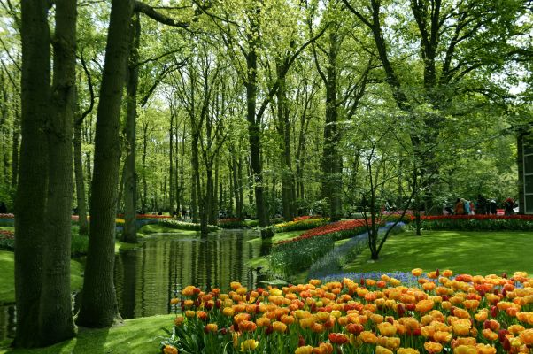

Welcome to Mila's World of Gardening

Hello and welcome! My name is Mila. I'm an amateur gardener living in the woods in North Carolina. This website is here as a place for me to share my experience with plants and to encourage others who want to start their own gardens!
About Me

My name is Mila. I'm a student at the University of North Carolina at Charlotte, pursuing a degree in Computer Science. I grew up in rural North Carolina on a hay field, and my earliest memory of gardening is when I used to grow vegetables with my mother. Now, I find joy in stepping away from technology for a little while in order to care for plants. Gardening helps me to connect more with nature and to be present in the world around me, and it's a passion that I am able to take with me everywhere that I go.
Gardening by Season
Timing is crucial when it comes to gardening. Different plants thrive during different seasons. Spring is a great time for blooming flowers, while summer is ideal for warm-weather crops.
That being said, there is always something that you can be growing, even if it's from the comfort of inside your home. Late winter is a perfect time to start growing vegetables from seeds, as long as you don't take them outside until it's warm enough.
Autumn is a great time for goldenrod, asters, chrysanthemums, and Japanese spider lilies.
Gardening by Region
The best places to garden depend on your climate zone. Coastal areas are great for salt-tolerant plants, while cooler regions are better for hardy vegetables.
The USDA has a helpful Plant Hardiness Zone Map which can help you to identify what plants you should grow and when!

How to Start Your Garden
Starting a garden is easier than you think! Here’s a simple guide:
- First and foremost, decide where you want your plants to go. Will they be indoors or outdoors? Are they going to grow in sunlight or in shade? Will they be in dark brown soil, red clay, or sand?
- Next, it's time to research different plants you might be interested in. Find out which ones are compatible with your answers to the previous questions.
- Finally, prepare your soil and plant away!

Why Gardening?
Gardening is great for your mental and physical health. It reduces stress, boosts your mood, and connects you to nature. Additionally, there's something very fulfilling about watching things that you have grown and taken care of come to life!
